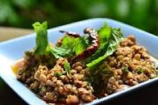

Laab Mhoo Recipe

Laab Mhoo is a flavourful spicy Thai dish.
Ingredients
- 10oz boneless pork
- 1/8 cup water
- 1 tbsp kaffir lime leaf
- 1 tbsp ground rice
- 3 shallots or spring onions
- 1 tsp thai red chili powder
- 2 tbsp thai fish sauce
- 1-2 limes juiced
- 1/2 tbsp of thai chili peppers
Preparation:
- Mince the pork. Do not chop too finely, so that the meat retains some texture
- Add water to a hot pan and add the minced pork. Cook for 3 minutes stirring continuously.
- Add the kaffir lime leaf and the toasted rice. Stir well and turn off the heat
- Add chopped shallots or spring onions.
- Add dried chili powder and fish sauce and stir well.
- Add lime juice and fresh Thai chili peppers and stir
- Enjoy!